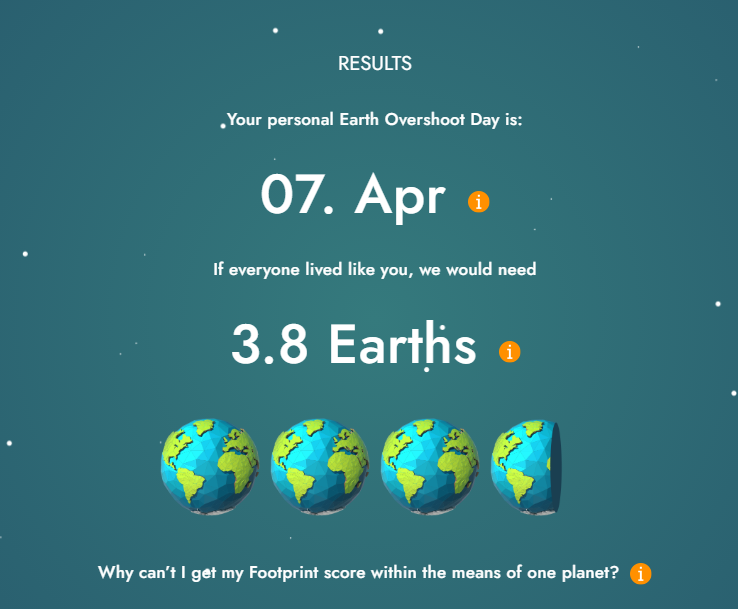
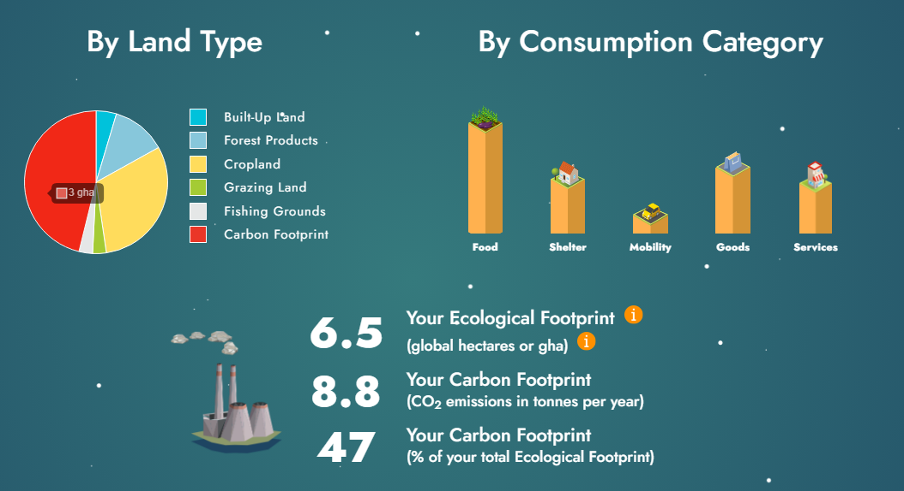
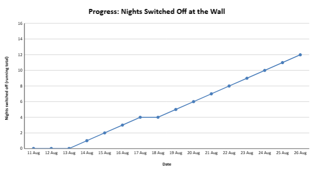
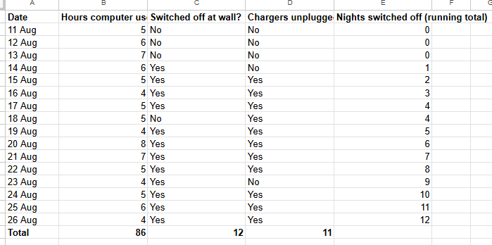

Task 3: Sustainability
A personal sustainability audit: measuring my footprint, choosing a UN Sustainable Development Goal, and tracking one change for 16 days.
Evidence


My footprint results
My personal Earth Overshoot Day was 7 April: if everyone lived like me, we would need 3.8 Earths (Global Footprint Network, n.d.). My Ecological Footprint came to 6.5 global hectares, and my carbon footprint was 8.8 tonnes of CO2 a year, which made up 47% of my total footprint. By land type, carbon was the largest part, followed by cropland. By consumption category, food was the largest, followed by goods, then shelter and services, with mobility the smallest.
I was surprised by how high my result was. I didn’t expect my lifestyle to need nearly four Earths. What surprised me most in the breakdown was that food was my biggest category, ahead of everything else. Some of the largest parts of my footprint are also hard for me to control: decisions about household energy are made for the whole household, and someone else does most of the shopping and cooking.
Looking back, the item I chose to track wasn’t my biggest category. I chose my device electricity use partly because it was easier to measure than food, and partly because food is hard for me to change when I don’t control much of what I eat. I also didn’t notice at the time that food was my biggest category; I only saw it properly when I looked back at the breakdown.
My chosen SDG
SDG 7: Affordable and Clean Energy
Why I chose it
I chose SDG 7 because it links to my research paper on the carbon footprint of computing, which looked at how much electricity computing uses. Writing that paper showed me that devices keep drawing power even when they sit idle, and that their emissions depend on how the electricity is generated.
About the goal
SDG 7 aims to ensure access to affordable, reliable, sustainable and modern energy for all (United Nations, n.d.). It mostly works at the scale of national energy systems, but one of its targets, 7.3, is to double the global rate of improvement in energy efficiency by 2030 (United Nations, n.d.). Wasting less electricity at home is a small, personal version of that target, which made it a natural place for me to start.
Challenges
Saving electricity only reduces emissions as much as that electricity is emissions-intensive, because a device’s emissions depend on how its power is generated. Victoria’s grid emission factor is 0.74 kg of CO2-e per kWh (Department of Climate Change, Energy, the Environment and Water, 2026), so every kilowatt-hour I use still produces close to three-quarters of a kilogram of emissions. Small losses are also easy to overlook: many electronics keep drawing a little power on standby (often called “phantom load”), and chargers left in the wall do the same (CHOICE, n.d.).
Actions to tackle it
At a personal level, switching devices off at the wall and unplugging chargers cuts this standby waste (CHOICE, n.d.). At a household level, a GreenPower plan means the energy provider buys government-accredited renewable electricity on the household’s behalf (GreenPower, n.d.), which tackles the emissions behind the electricity itself and connects even more directly to SDG 7.
My challenge and goal
- What I challenged myself on
- My electricity use, especially from my devices
- Scope
- Scope 2: the electricity my computer uses comes from the grid, so its emissions are released at the power station rather than by me directly (World Resources Institute & World Business Council for Sustainable Development, 2004)
- What I changed
- Switching devices off at the wall instead of leaving them on standby, and unplugging chargers when I wasn’t using them
- How I tracked it
- Hours of device use, plus a daily log of my habits, kept in Google Sheets
- My goal
- Switch all my devices off at the wall before bed every night, and never leave them on standby when I’m not using them
- Tracking period
- 11 to 26 August 2026 (16 days)
Tracking my progress

I met my goal on 12 of the 16 nights (75%). After missing the first three nights, I switched off at the wall on 12 of the last 13, with 18 August the only miss. I unplugged my chargers on 11 of the 16 days.
| Period | Nights switched off at wall | Days chargers unplugged | Computer use (hours) | Est. standby energy avoided (kWh) |
|---|---|---|---|---|
| Week 1 (11–17 Aug) | 4 of 7 (57%) | 3 of 7 | 38 | 0.5 |
| Week 2 (18–24 Aug) | 6 of 7 (86%) | 6 of 7 | 38 | 0.8 |
| Final days (25–26 Aug) | 2 of 2 (100%) | 2 of 2 | 10 | 0.3 |
| Total | 12 of 16 (75%) | 11 of 16 (69%) | 86 | 1.5 |
To estimate the impact, I assumed my desk setup (computer, monitor, speakers and two chargers) draws about 8 W on standby and would otherwise sit idle for about 16 hours a day. Each night I switched off therefore avoided roughly 0.13 kWh, or about 1.5 kWh over the 16 days. Using Victoria’s grid emission factor of 0.74 kg of CO2-e per kWh (Department of Climate Change, Energy, the Environment and Water, 2026), that is around 1.1 kg of CO2-e.
My computer use stayed steady at about 5.4 hours a day (86 hours in total, and 38 hours in each full week). That makes sense, because my goal targeted standby waste rather than how much I used my devices.

Reflection
Situation
My footprint result of 3.8 Earths was higher than I expected. I chose to work on my device electricity use because it linked to my research paper and was easier to measure than my biggest category, food.
Task
My goal was to switch all my devices off at the wall every night, and not leave anything on standby when I wasn’t using it.
Action
For 16 days, from 11 to 26 August, I logged my hours of device use and whether I had switched everything off at the wall and unplugged my chargers. I kept the log in Google Sheets rather than Excel, because we hadn’t started the spreadsheet part of the unit yet and I was more confident in Google Sheets.
The hardest part was getting started: I kept forgetting and missed the first three nights. Unplugging chargers took longer to stick, and I forgot again on 23 August. Once it became a habit, switching off at the wall was easy, since it takes a few seconds and costs nothing. Keeping the log helped too, because seeing a “no” in my spreadsheet the next morning made me more careful that night.
Result
I met my goal on 12 of 16 nights (75%), and switching off at the wall now feels automatic. The bigger lesson was about where I put my effort. The energy I saved was real but small: about 1.5 kWh over 16 days, or roughly 25 kg of CO2-e a year if I keep it up, which is well under 1% of my 8.8 tonne carbon footprint. The challenge showed me that the easiest thing to measure is not always the thing that matters most.
What I’d do differently / next
I’ll keep switching my devices off at the wall. If I did this challenge again, I would talk with my household about a shared change, such as cooking fewer meat-heavy meals or moving to a GreenPower plan. Those choices would shift my footprint far more than unplugging chargers, so my next step is the part of my footprint I share with my household, starting with food.
References
- CHOICE. (n.d.). Should you turn off appliances at the power point? https://www.choice.com.au/home-improvement/energy-saving/standby-energy-savers/articles/should-i-turn-my-appliances-off-at-powerpoint
- Department of Climate Change, Energy, the Environment and Water. (2026). National Greenhouse Accounts Factors 2026. Australian Government. https://www.dcceew.gov.au/climate-change/publications/national-greenhouse-accounts-factors-2026
- Global Footprint Network. (n.d.). Ecological Footprint Calculator. https://www.footprintcalculator.org
- GreenPower. (n.d.). Frequently asked questions. https://www.greenpower.gov.au
- United Nations. (n.d.). Goal 7: Ensure access to affordable, reliable, sustainable and modern energy for all. Department of Economic and Social Affairs. https://sdgs.un.org/goals/goal7
- World Resources Institute & World Business Council for Sustainable Development. (2004). The greenhouse gas protocol: A corporate accounting and reporting standard (Rev. ed.). https://ghgprotocol.org/sites/default/files/standards/ghg-protocol-revised.pdf